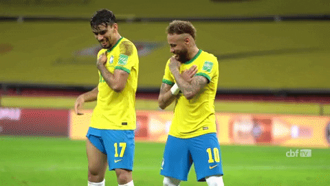

Como todo brasileiro na última terça – feira 08/07/2014, também acompanhei a última participação da seleção Brasileira na copa do mundo no Brasil, torci de forma consciente já que tenho a experiência de pelo menos 3 copas anteriores, e sei que em um jogo de futebol tudo é possível, apesar da empolgação da população pelos últimos resultados conseguidos de forma sofrida, acho que o povo brasileiro ainda se entrega de forma descontrolada em alguns casos por uma simples partida de futebol, pois na realidade se pararmos para analisar, trata-se apenas disso, uma simples partida de futebol. Mas que pela grandiosidade do vento, chega a desnortear completamente a razão de algumas pessoas, fazendo com que elas tomem iniciativas insanas apenas porque o resultado do jogo não lhe foi favorável. O que na realidade me chamou bastante a atenção, não foi à entrega da população de forma quase descontrolada em apoiar a seleção Brasileira, já que isso já era esperado pela paixão que o povo Brasileiro sempre depositou na seleção, mas sim a mudança de horários dos vários cultos religiosos por todo o Brasil, no intuito apenas de assistir e torcer por um jogo de futebol. Essa atitude me deixou de certa forma perplexo devido a minha condição cristã, já que em meus ensinos religiosos aprendi a jamais trocar o horário a que dedico as minhas orações por qualquer que seja o evento ou atividade de entretenimento. Sei que eu posso até estar errado diante de minha colocação para a grande maioria das pessoas, mas essa é a minha forma de ver e fazer uma espécie de comparação entre grande parte das entidades religiosas, de hoje e há de alguns anos atrás, onde a fé e o sentimento religioso eram mais fortes dentro do coração daqueles que se diziam pregadores do cristianismo. Diante desses fatos e do excesso de confiança que acompanhei por todo o nosso Brasil, sendo amplamente incentivado e divulgado através dos seus patrocinadores, no intuito comercial de lucrar cada vez mais com esse evento, foi que fiquei na dúvida como todo Brasileiro de qual deveria ter sido o real motivo daquela derrota histórica? Não pelo fato único e exclusivo da derrota, mas pela forma estranha e irreconhecível que aconteceu assustando não só os adversários em campo, mas todo o mundo que acompanhava aquele jogo.
